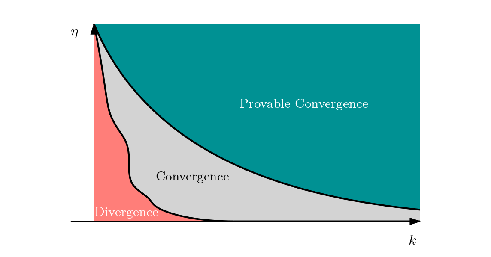
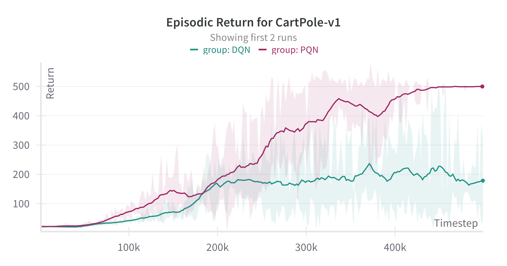
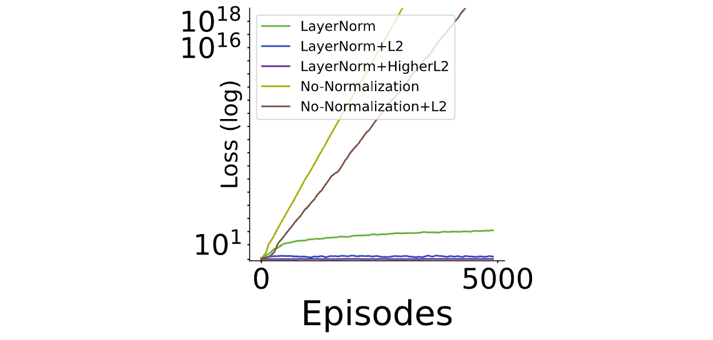

*This blog summarises work spanning two papers in collaboration with Matthew J.A. Smith (Whiteson Research Lab (WhiRL), University of Oxford), Matteo Gallici (Universitat Politècnica de Catalunya), Benjamin Ellis (Foerster Lab for AI Research (FLAIR), University of Oxford), Bartomeu Pou (Barcelona Supercomputing Center), Ivan Masmitja (Institut de Ciències del Mar), Shimon Whiteson (Whiteson Research Lab (WhiRL), University of Oxford), Jakob Nicolaus Foerster (Foerster Lab for AI Research (FLAIR), University of Oxford) and Mario Martin (Universitat Politècnica de Catalunya).
See below for citations.
Overview
In Part I of this blog, we characterised the stability of TD through the TD Jacobian.
In this part, we now build on this analysis to better understand the reasons for instability before proposing a surprisingly simple architectural solution that can stabilise TD.
By the end of this blog, readers will be able to understand the answers to the following two questions in detail:
I. Can we formalise the deadly triad?
Yes! It arises naturally from the TD Jacobian
II. What can be done to tackle the deadly triad?
We show that using a combination of LayerNorm and \ell^2 regularisation can overcome the deadly triad
Prerequisites: We assume familiarity with a Markov decisions process (MDP) defined as:
\begin{equation*}
\mathcal{M} \coloneqq \left\langle \mathcal{S},\mathcal{A},P_0, P_S(s,a), P_R(s,a), \gamma\right\rangle,
\end{equation*}
where \mathcal{S} and \mathcal{A} are the state and action spaces, P_0 is the initial state distribution, P_S(s,a) and P_R(s,a) are the state and reward transition distributions and \gamma is a discount factor.
In addition, we also assume some familiarity with stationary distributions and Markov chains, vector calculus and linear algebra.
We have tried to make this blog as accessible as possible for less theoretically inclined readers. For readers who wish to skip its contents and just understand our stable parallelised deep Q-learning algorithm (PQN) from a practical perspective, we have a separate blog here.
Recap: The TD Jacobian
Before diving into the details of the deadly triad, we recap key results from Part I.
In these blogs, we have been studying the TD update under function approximation.
The goal of TD is to carry out policy evaluation for some target policy \pi, that is, we want to learn a value function V^\pi or Q-function Q^\pi.
TD does this by approximately solving a Bellman equation Q^\pi(\cdot)=\mathcal{B}^\pi[Q^\pi](\cdot) using a combination of function approximation, stochastic sampling and bootstrapping.
The TD update is:
where Q_{\omega}(s_t,a_t) is a parametric function approximator for a Q-function, parametrised by \omega\in\Omega and we define the TD error vector \delta(\omega_t,\varsigma_t) as:
Here \varsigma_t\coloneqq (s_t,a_t,r_t,s_t',a_t') denotes all the random variables (i.e. state, action, reward, next state, next action) bunched together in a single random variable for notational convenience.
We denote the sampling distribution for state-actions as d^\mu, where \mu denotes the sampling policy.
Recall our goal was to obtain a simple mathematical tool that can be used to determine the stability of the TD update in Eq. (1).
Building on analysis by [Tsitsiklis and Van Roy, 1997] and [Bhandari et al., 2018], we found that stability can be determined by whether or not the TD Jacobian was negative or positive definite, giving rise to the TD stability criterion:
TD Stability Criterion:
The TD stability criterion holds if the TD Jacobian J(\omega)\coloneqq \nabla_\omega \mathbb{E}_{\varsigma_t}\left[\delta(\omega,\varsigma_t)\right] is negative definite, that is:
v^\top J(\omega)v<0 for any test vector v and \omega\in\Omega.
The Deadly Triad
In Part I, we briefly mentioned that there exist known counterexamples demonstrating that TD is provably divergent for nonlinear function approximators and/or off-policy data [Baird, 1995, Tsitsiklis et al., 1997].
This combination of bootstrapping, off-policy data and function approximation is known as the 'deadly triad' [Sutton and Barto, 2018, van Hasselt et al., 2018].
As our TD Jacobian characterises the stability of TD, we should expect it to be able to explain the deadly triad.
We now show that this is indeed the case, and the deadly triad emerges quite naturally from plugging in the TD update in Eq. (1) into the TD stability criterion:
We give a full derivation of this result below, however to best understand the nonlinear and off-policy aspects of the deadly triad, we really encourage readers to derive it for themselves:
We start from the definition of the TD stability criterion:
Whether Ineq. (6) holds or not depends on the sampling distribution d^\mu, which governs how state-actions s_t,a_t are sampled for the TD update.
For the special case of on-policy sampling, agents follow the target policy a_t\sim\pi(s_t) when collecting data for the TD upates.
This means that the sampling policy is the same as the target policy: \mu=\pi.
If the agent is interacting with an ergodic MDP, under appropriate regularity assumptions (see [Roberts and Rosenthal, 2004] for a comprehensive survey), the distribution over state-actions that the agent encounters tends towards the stationary distribution of the Markov chain.
Crucially, if d^\pi is a stationary distribution of the MDP, for any measurable function f(s,a), it satisfies:
In words, Eq. (7) says that when sampling from the stationary distribution, the expected value of a function one timestep into the future under the Markov chain is the same as the expected value at the current timestep, so there is no change in expectation as the Markov chain is traversed.
Through an application of the Cauchy-Schwarz inequality, this allows us to prove:
Now, if d^\pi is a stationary distribution of the MDP, then:
\begin{align*}
\mathbb{E}_{\varsigma_t}\left[(v^\top \nabla_\phi Q_{\omega}(s'_t,a'_t))^2\right]&=\mathbb{E}_{s_t,a_t\sim d^\pi, s_t',a_t'\sim P_{S,A}^\pi(s_t,a_t) }\left[(v^\top \nabla_\phi Q_{\omega}(s'_t,a'_t))^2\right]\\
&=\mathbb{E}_{s_t,a_t\sim d^\pi}\left[(v^\top \nabla_\phi Q_{\omega}(s_t,a_t))^2\right],
\end{align*}
Because \gamma<1 by definition, Ineq. (8) implies that Ineq. (6) holds, and so the off-policy component of the TD stability criterion is automatically satisfied when sampling on-policy from the stationary distribution, that is:
Unfortunately, the assumption that TD is updated by sampling from the MDP's stationary distribution is not practical for two reasons:
firstly, in learning problems some degree of exploration is needed so that TD updates cover a diverse space of state-action-reward-state observations, and so updates are typically sampled from an exploration policy \mu\ne \pi that differs from the target policy;
secondly, even if on-policy sampling is carried out, the rate at which the sampling distribution converges to the stationary distribution of the Markov chain may be slow, meaning that for the finite timescales over which practical algorithms run, the actual sampling distribution may be far from the stationary distribution.
Algorithms like Q-learning in particular are inherently off-policy, and it is possible to construct MDPs like Baird's counterexample [Baird, 1995] for which \mathcal{C}_\textrm{OffPolicy}(Q_\omega,d^{\mu})>0, leading to provably divergent algorithms.
As such, we conclude that \mathcal{C}_\textrm{OffPolicy}(Q_\omega,d^{\mu}) measures the degree of distributional shift of the sampling distribution from the station distribution that TD can tolerate before becoming unstable.
We now isolate at the remaining term of Ineq. (3), which governs the nonlinear instability of TD:
Nonlinear Instability: We define the nonlinear component of the TD stability criterion as:
Examining Eq. (9) reveals that the nonlinear component of the TD stability condition does not apply for linear function approximators as second order derivatives are zero: \nabla_\phi^2 Q_\phi(x)=0, hence \mathcal{C}_\textrm{Nonlinear}(Q_\omega)=0.
In the nonlinear case, \mathcal{C}_\textrm{Nonlinear}(Q_\omega) can be arbitrarily positive depending upon the specific MDP and choice of function approximator.
Hence nonlinearity is a key source of instability in TD which is characterised by \mathcal{C}_\textrm{Nonlinear}(Q_\omega)
In conclusion, our analysis provides a clear answer to question I: Can we formalise the deadly triad?
The TD stability criterion can be violated for off-policy sampling and for nonlinear function approximation when \mathcal{C}_\textrm{OffPolicy}(Q_\omega,d^{\mu})>0 and \mathcal{C}_\textrm{Nonlinear}(Q_\omega)>0.
LayerNorm and \ell^2-Regularisation to the Rescue
We have shown that the deadly triad presents a major challenge for any TD method to overcome if RL algorithms are to be safe and reliable.
We now show that introducing LayerNorm layers into the critic and \ell^2-regularisation into the TD update can tackle both the off-policy and nonlinear components of the deadly triad, allowing us to develop and simple and stable modern Q-learning algorithm.
For our analysis, we study the following LayerNorm critic:
\begin{align*}
Q_\omega^k(s,a)\coloneqq w^\top\sigma_\textrm{Post}\circ\textrm{LayerNorm}^k\left[ \sigma_\textrm{Pre}\circ M x\right],
\end{align*}
where x\coloneqq \textrm{Vec}(s,a) is a d-dimensional input vector formed of the state-actions, \omega= [w^\top,\textrm{Vec}(M)^\top] is the parameter vector where M\in\mathbb{R}^{k\times d} is a k\times d matrix where each row \lVert m_i\rVert is bounded, w\in\mathbb{R}^k is a vector of final layer weights where \lVert w\rVert is bounded and \sigma_\textrm{Pre} and \sigma_\textrm{Post} are element-wise C^2-continuous activations with bounded 2nd order derivatives.
We assume the final activation \sigma_\textrm{Post} is L_\textrm{Post}-Lipschitz with \sigma_\textrm{Post}(0)=0, (e.g. tanh, identity, GELU, ELU...).
LayerNorm [Ba et al., 2016] is defined element-wise as:
where \epsilon is a small constant introduced for numerical stability. Deeper networks with more LayerNorm layers may be used in practice, however our analysis reveals that only the final layer weights affect the stability of TD with wide LayerNorm neural networks.
So why should we expect LayerNorm to stabilise TD?
The key insight is that the LayerNorm operator rescales the input according to a standard Gaussian, hence if weights in any part of the network before the LayerNorm start to grow, their effect will be countered through the variance term in the denominator of Eq. (10) and will not cause the final output of the network to grow accordingly.
This arises from the normalising property of the LayerNorm layer.
We should expect this property to discourage any part of the network from growing without bound, especially as k increases and the empirical mean and standard deviations in Eq. (10) approach their true expectations, thereby increasing the degree of normalisation provided.
In our paper we formally investigate this property, showing that the off-policy and nonlinear components of the TD stability condition can be bounded as:
where we have split the test vector v=[v_w^\top,v_M^\top]^\top in to two components: v_w associated with final layer parameters w, and v_M associated with the matrix parameters \textnormal{\textrm{Vec}}(M).
The bounds in Ineqs. (11) and (12) reveals that as the degree of regularisation increases, that is in the limit k\rightarrow \infty, all nonlinear instability can be mitigated: \lim_{k\rightarrow\infty} \mathcal{C}_\textnormal{\textrm{Nonlinear}}(Q_\omega^k)=0 and a residual term is left in the off-policy bound: \lim_{k\rightarrow\infty}\mathcal{C}_\textnormal{\textrm{OffPolicy}}(Q_\omega^k,d^{\mu})\le\left\lVert v_w \cdot\frac{ \gamma L_\textrm{Post} }{2}\right\rVert^2.
The nonlinear bound in Ineq. (12) can be explained using established theory of wide neural networks; as layer width increases, second order derivative terms tend to zero [Lui et al. 2020]. Our proof extends this theory, showing that LayerNorm preserves this property.
As we outlined in the previous section, linear function approximators still suffer from off-policy instability due the distributional shift between \pi and \mu.
Because of this, linearisation of wide networks alone cannot explain the bound in Ineq. (11).
As we already alluded to, our proof reveals this bound is due to the normalising property of LayerNorm, which upper bounds the expected norm: \mathbb{E}_{x\sim d^\mu}\left[\left\lVert\textrm{LayerNorm}^k[Mx]\right\rVert \right]\le 1regardless of the sampling distributiond^\mu or magnitude of M.
This yields a bound with a residual term of \left\lVert v_w \cdot\frac{ \gamma L_\textrm{Post} }{2}\right\rVert^2 that is independent of \pi and \mu, overcoming the distributional shift issue responsible for off-policy instability.
We have almost tackled the deadly triad, showing that increasing k can diminish the nonlinear and off-policy components of the TD stability condition towards zero.
To formally guarantee stability, we just need to deal with the residual term in the off-policy bound and give all remaining parameters a small push so both components become negative.
A simple solution is to introduce \ell^2-regularisation into the TD update vector:
for any \eta>1 where \delta^k(\omega,\varsigma_t) is the TD update vector from Eq.(2) using the LayerNorm critic.
Using the \ell^2-regularised update from Eq. (13) yields a bound:
which implies \mathcal{C}_\textrm{OffPolicy}(Q_\omega^k,d^{\mu})<0 with sufficiently large k, meaning the TD stability criterion will be satisfied.
We formally confirm this intuition in the following theorem, assumptions and a full proof of which can be found in our paper:
\begin{align*}
&\textrm{\textbf{Theorem:} Using the LayerNorm regularised TD update } \delta^k_\textrm{reg}(\omega,\varsigma_t)\\
&\textrm{in Eq. (13), there exists some finite }k'\textrm{ such that the TD stability criterion}\\
&\textrm{holds for all }k>k'.
\end{align*}
In words, our \textrm{\textbf{Theorem}} states that there exists a finite value of k that will provably stabilise the TD updates given \eta>1.
The key insight from this result is that as k and \eta increase, the TD updates transition from a region of potential divergence to provable convergence. We sketch this phenomenon in Fig. 1 below:
Figure 1: Sketch of Convergence Regime.

As the update transitions into the region of provable convergence (blue), it can pass into a region of convergence (grey) that may not be provable using our bounds.
As the blue region represents a regime with a single, stable fixed point, mirroring a convex optimisation problem, the grey region also contains regimes for which there exist several stable fixed points, mirroring a standard non-convex optimisation problem with several local minima.
When deploying our algorithm in practice, we don't need to reach a provably convergent region, instead it suffices to increase k enough such that the updates lie in the generally convergent region (i.e. blue or grey).
With this in mind, we remark that whilst adding an \ell^2-regularisation term -\eta \omega to all parameters can stabilise TD alone, large \eta recovers a quadratic optimisation problem with minimum at \omega=0, pulling the TD fixed points towards 0.
Hence, we suggest \ell^2-regularisation should be used sparingly; only when LayerNorm alone cannot stabilise the environment and initially only over the final layer weights.
Aside from Baird's counterexample, we find LayerNorm without \ell^2 regularisation can stabilise all environments in our paper's extensive empirical evaluation.
Putting Theory to the Test
Recall from our first blog, we showed empirically how deep Q-learning (that is, DQN without a target network or replay buffer) is too unstable to be used in even simple domains.
In our theoretical analysis, we developed a regularised TD update (Eq. (13)) that is provably stable for some finite network width.
As an empirical demonstration, we now repeat the same experiment to show how the introduction of LayerNorm yields a simple and stable deep Q-learning algorithm that can be applied in practice.
We plot results in Figs. 2-4 below, comparing CleanRL's DQN [Huang et al., 2021] with the target network and replay buffer removed to CleanRL's implementation of our PQN algorithm for a single environment interaction at each timestep with no buffer and without \lambda-returns, thereby recovering a regularised deep Q-learning algorithm without a replay buffer or target network.
Figure 2: ClearnRL's DQN without a target network and replay buffer in Cartpole V1.
Figure 3: ClearnRL's PQN (single environment interaction, no lambda-returns and no buffer) in Cartpole V1.
Figure 4: Comparison of Episodic Returns in Cartpole V1.

The result above show that simply introducing LayerNorm regularisation results in a marked improvement in performance; our update can reliably learn to solve Cartpole-v1 where deep Q-learning fails.
Finally, we evaluate in the infamous Baird's counterexample [Baird, 1995], which is a provably divergent MDP for Q-learning under function approximation.
Fig. 5 shows that together LayerNorm + \ell^2-regularisation can stabilise TD in this challenging environment.
Our results reveal that stabilisation is mostly attributed to the introduction of LayerNorm.
Moreover the degree of \ell^2-regularisation needed is small - just enough to mitigate off-policy stability due to final layer weights according to our theoretical results - and it makes relatively little difference when used in isolation.
Figure 5: Evaluation in Baird's Counterexample.

In conclusion, our analysis and empirical evaluation provides a positive answer to the question: What can be done to tackle the deadly triad?
Introducing LayerNorm and \ell^2-regularisation has the power to stabilise the TD update.
What's Next?
In this blog, we have shown that the deadly triad arises naturally from our TD stability criterion, which can be separated into a nonlinear and off-policy component.
Although the deadly triad seemed like a fatal blow for simple and stable TD algorithms, we showed that introducing LayerNorm regularisation alongside \ell^2-regularisation into the TD update offers a simple but powerful solution with provable convergence guarantees.
In our next blog, we show how our stable Q-learning update can unlocks the power of parallelised computation for RL, allowing us to develop a state-of-the-art parallelised Q-learning algorithm (PQN) that is several times faster than traditional DQN with improved sample efficiency.
See you there!
Citation
For attribution in academic contexts, please cite this blog as:
@misc{Fellows2025fixingtdii,
title={Fixing TD Pt II: Overcoming the Deadly Triad},
author={Mattie Fellows},
journal={Foerster Lab for AI Research (FLAIR)},
year={2025}
}
and the corresponding papers as:
@article{Fellows23why,
author = {Mattie Fellows and Matthew J.A. Smith and Shimon Whiteson},
journal = {International Conference on Machine Learning (ICML)},
title = {Why Target Networks Stabilise Temporal Difference Methods},
url={https://arxiv.org/pdf/2302.12537},
year = {2023}
}
@article{Gallici25simplifying,
title={Simplifying Deep Temporal Difference Learning},
author={Matteo Gallici and Mattie Fellows and Benjamin Ellis
and Bartomeu Pou and Ivan Masmitja and Jakob Nicolaus Foerster
and Mario Martin},
year={2025},
eprint={2407.04811},
journal={The International Conference on Learning Representations (ICLR)},
primaryClass={cs.LG},
url={https://arxiv.org/abs/2407.04811},
}